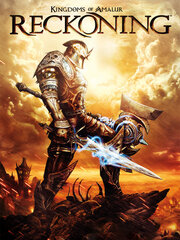

Kingdoms of Amalur: Reckoning
Kingdoms of Amalur: Reckoning
Detalles
|  | |
| Tiempo de juego | No Jugado |
| Última actividad | Nunca |
| Añadido | 22/11/2018 |
| Modificado | Nunca |
| Estado de finalización | Not Played |
| Librería | Steam |
| Fuente | Steam |
| Plataforma | PC (Windows) |
| Fecha de lanzamiento | 07/02/2012 |
| Puntuación de la Comunidad | 86 |
| Puntuación de la Crítica | 81 |
| Puntuación de usuario | |
| Género | Action RPG |
| Desarrollador | 38 Studios Big Huge Games |
| Editor | 38 Studios Electronic Arts |
| Característica | Achievements Cloud Saves Nexus Mods Partial Controller Support Remote Play On Tablet Single Player |
| Enlaces | Community Hub Discussions Guides News Store Page PCGamingWiki Achievements Nexus Mods |
| Tag | |
Descripción
Re-Reckoning
Greetings, traveller!
Destiny awaits you, but due to a publisher change surrounding Kingdoms of Amalur, this version is no longer available. If you want to choose your fate and battle through this world worth saving, follow this propitious path: Kingdoms of Amalur Re-Reckoning.
Farewell, future saviour of our world!
About the Game
The minds of New York Times bestselling author R.A. Salvatore, Spawn creator Todd McFarlane, and Elder Scrolls IV: Oblivion lead designer Ken Rolston have combined to create Kingdoms of Amalur: Reckoning, a new role-playing game set in a world worth saving. Build the character you've always wanted and continuously evolve it to your style of play with the revolutionary Destiny system. Choose your path and battle through a master-crafted universe featuring some of the most intense, responsive, and customizable RPG combat ever.Key Features:
A Massive World to Explore, Filled with Epic Fiction and Rich Storytelling
- Uncover the secrets of Amalur in hundreds of hours of immersive gameplay, from the vibrant city of Rathir to the vast region of Dalentarth to the grim dungeons of the Brigand Hall Caverns.
- Rescue a world torn apart by a vicious war and control the keys to immortality as the first warrior ever to be resurrected from the grips of death. Turn your lack of a destiny to your advantage and harness fate as a weapon.
- Explore deep levels of lore in a universe steeped in 10,000 years of fiction created by New York Times bestselling author R.A. Salvatore.
- Customize your play in a dynamic combat system that delivers some of the most intense and responsive action ever seen in an RPG.
- Seamlessly integrate magical and melee attacks as you take on scores of enemies in grand fight sequences and finish them off with brutal Fateshift kills.
- Build the character you've always wanted with the revolutionary new Destiny system that allows you to continuously evolve your character class to your style of play.
- Create and modify your hero with millions of combinations of skills, abilities, weapons and pieces of armor.